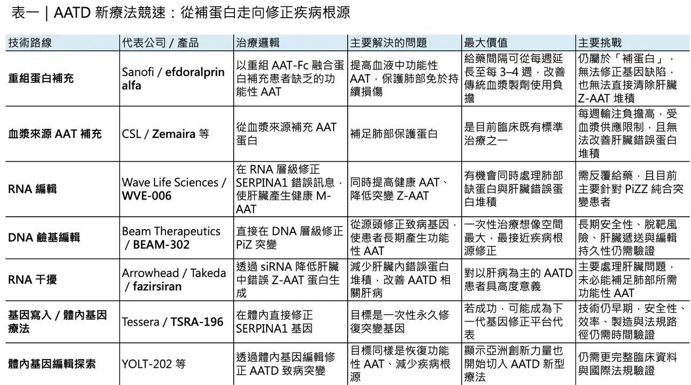
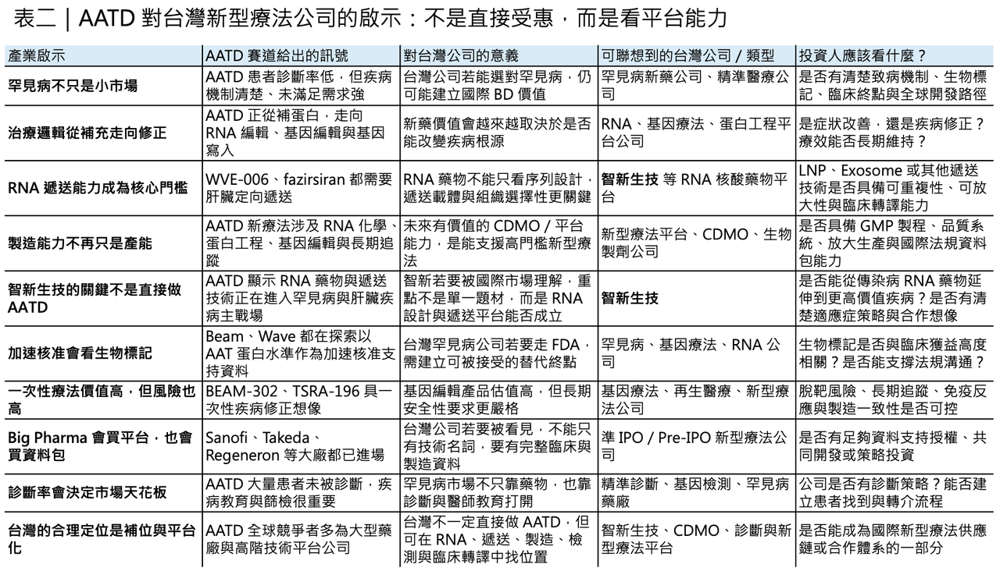

打破 40 年僵局：AATD 迎來新療法競速，從補蛋白走向基因修正
一個沉睡了近 40 年的罕見遺傳病市場，正在被重新打開。
分享這篇分析
把這篇文章轉給關注生技醫藥、公司研究或資本市場的朋友。
這個疾病叫做 α-1 antitrypsin deficiency（AATD，α-1 抗胰蛋白酶缺乏症）。近期在 2026 年美國胸腔醫學會年會（ATS 2026）上，Sanofi、Wave Life Sciences、Beam Therapeutics 同時公布 AATD 治療新資料，分別代表三條完全不同的開發路線：重組蛋白補充、RNA 編輯、基因鹼基編輯。
這不是一般罕見病新藥的單點突破，更像是一個疾病領域從「只能補蛋白」走向「修正疾病根源」的集體轉向。AATD 過去近 40 年缺乏重大創新。從 1987 年血漿來源的 α-1 抗胰蛋白酶補充療法被引入後，臨床長期依賴每週輸注的血漿製劑。這些療法可以補充血液中的功能性 α-1 抗胰蛋白酶，但不能真正修正基因缺陷，也不能處理肝臟裡錯誤蛋白堆積造成的問題。
現在，局面開始變了。
Sanofi 的 efdoralprin alfa 嘗試用長效重組蛋白改善傳統補充療法；Wave 的 WVE-006 嘗試在 RNA 層級把錯誤訊息改回來；Beam 的 BEAM-302 則更進一步，試圖用一次性鹼基編輯，在基因層級修正致病突變。
📌 這代表 AATD 正在從「慢性補充」進入「疾病修正」的前夜。

01｜AATD 是什麼？一個同時傷肺與傷肝的單基因疾病
AATD 是由 SERPINA1 基因突變 引起的遺傳疾病。
SERPINA1 基因負責製造 α-1 antitrypsin（AAT，α-1 抗胰蛋白酶）。AAT 的主要功能，是保護肺部組織免受中性球彈性蛋白酶等酵素破壞。正常情況下，AAT 由肝臟製造後分泌到血液，再運送到肺部，像保護罩一樣防止肺泡被發炎酵素慢慢破壞。但在 AATD 患者身上，最常見的嚴重型突變之一是 PiZZ 基因型。突變後的 Z-AAT 蛋白容易在肝細胞內錯誤折疊、堆積，無法順利分泌到血液中。
結果會出現兩個問題。
📌 第一，血液與肺部缺乏足夠功能性 AAT，肺部失去保護，容易發展成肺氣腫與慢性阻塞性肺病樣表現。
📌 第二，錯誤折疊的 Z-AAT 堆積在肝臟，長期可能導致肝發炎、纖維化、肝硬化，甚至肝衰竭。
所以 AATD 不是單純肺病。
它是同時牽涉肺部與肝臟的單基因疾病，這也是治療困難的地方。如果只補充外來 AAT，可以改善肺部缺乏蛋白的問題，但無法清除肝臟內堆積的錯誤 Z-AAT。如果只降低錯誤 Z-AAT，又可能沒有補足肺部需要的功能性 AAT。因此，理想的新療法必須回答兩個問題：
📌 能不能讓血中功能性 AAT 回到保護水平？
📌 能不能減少肝臟裡錯誤 Z-AAT 的堆積？
過去 40 年，臨床主要能處理第一個問題。現在的新技術，開始嘗試同時處理兩個問題。

02｜一個被低估的藍海：患者不少，但診斷率極低
AATD 長期被低估，並不是因為它沒有患者。
相反，AATD 在歐洲與北美白人族群中相對常見。Sanofi 估計全球約有 23.5 萬人受到這種疾病影響；但因症狀與一般慢性阻塞性肺病、氣喘、肺氣腫高度重疊，許多患者長期沒有被正確診斷。
這就是 AATD 的第一個商業特點：它是罕見病，但不是「看不到患者」的罕見病。
真正問題是診斷不足。
患者可能被當作普通慢阻肺治療多年，直到肺功能明顯惡化，才發現背後是遺傳性 AAT 缺乏。
對藥廠來說，這意味著市場不只來自現有患者，也來自未來診斷率提升。但診斷率提升不是自然發生的，它需要醫師教育、基因檢測、血中 AAT 濃度檢測、肺科與肝病科合作，以及支付端對罕見病檢測的支持。
所以 AATD 不是單純「有新藥就能爆發」的市場。它是 新藥、診斷、醫師教育與疾病認知 一起推動的市場。
03｜Sanofi：重組蛋白 efdoralprin alfa，先把傳統補充療法做得更好
Sanofi 這次在 ATS 2026 上公布的 efdoralprin alfa，是目前最接近傳統治療邏輯、但也最容易被醫師理解的一條路。
Efdoralprin alfa 是一種 重組人類 AAT-Fc 融合蛋白。它不是來自血漿捐贈，而是用重組技術製造，並透過 Fc 融合延長半衰期。現行標準療法主要是血漿來源 AAT 補充療法，例如 Zemaira 等產品，通常需要每週輸注。這對患者來說負擔很大，也受限於血漿來源與供應。
Sanofi 的 ElevAATe Phase 2 研究納入 97 名 AATD 相關肺氣腫患者，比較 efdoralprin alfa 每三週或每四週給藥，與每週一次血漿來源 AAT 補充療法。結果顯示，每三週給藥的 efdoralprin alfa 在第 32 週可將功能性 AAT 谷濃度提升到 24.1 微莫耳，每四週給藥組為 16.8 微莫耳，而每週標準血漿來源療法為 7.6 微莫耳。
這裡的關鍵，是所謂保護閾值。
臨床上通常把血中 AAT 濃度 11 微莫耳左右視為最低保護水準。Sanofi 的資料顯示，efdoralprin alfa 能讓患者更穩定地維持在這個水準以上，而且給藥間隔從每週一次延長到三週或四週一次。
這對患者很有意義。從每週輸注變成每三週或每四週一次，不只是方便。它可能改善依從性、降低治療負擔，也減少對血漿來源產品的依賴。但 efdoralprin alfa 的本質，仍然是補充療法。它把缺少的功能性 AAT 補回去，改善肺部保護，但它不能從根本上修正 SERPINA1 基因，也無法直接處理肝臟裡錯誤 Z-AAT 蛋白堆積。所以這條路是「更好的補蛋白」，不是「根治」。對 Sanofi 來說，這是一個很合理的商業切入點。它能先改善現有治療體驗，並建立可見的商業市場。
但真正改變 AATD 治療規則的，可能來自 RNA 與基因層級。
04｜Wave：WVE-006 用 RNA 編輯，讓肝臟重新生產健康 AAT
Wave Life Sciences 的 WVE-006，代表完全不同的思路。它不是補外來蛋白，而是試圖讓患者自己的肝細胞重新製造健康 AAT。
WVE-006 是一種 GalNAc-RNA 編輯療法。GalNAc 可以把藥物導向肝細胞；RNA 編輯則是在 RNA 層級，把錯誤訊息修正，使細胞產生更接近正常的 M-AAT，同時減少致病的 Z-AAT。這條路最吸引人的地方，是它同時碰到 AATD 的兩個核心問題。
📌 第一，它可以提高健康 M-AAT，補足肺部保護。
📌 第二，它可以降低 Z-AAT，減少肝臟蛋白堆積。
Wave 在 ATS 2026 期間公布 RestorAATion-2 研究更新，指出 WVE-006 在每兩週 200 mg 與每月 400 mg 劑量下，都能讓患者達到類似 MZ 基因型的保護性表型。公司也表示，400 mg 每月一次給藥在第 12 週產生 13.6 微莫耳總 AAT，其中健康蛋白為 7.98 微莫耳；200 mg 每兩週與 400 mg 每月隊列中，Z-AAT 分別下降 70.5% 與 67.7%。
📌WVE-006 不是單純把 AAT 水準拉高，而是讓蛋白組成改變。
如果患者體內能產生更多健康 M-AAT，同時減少 Z-AAT，理論上就能同時改善肺與肝。不過，WVE-006 也有幾個限制。第一，它主要針對 PiZZ 純合突變患者；第二，RNA 編輯需要長期反覆給藥，不是一次治療；第三，GSK 曾將該專案權利退回 Wave，這代表大型藥廠對開發風險與商業價值曾有不同判斷。
Wave 現在正和 FDA 討論潛在加速核准路徑，希望以生物標記作為支持資料。這將是 RNA 編輯能否在罕見肝源性疾病中走向商業化的重要觀察點。如果 WVE-006 成功，它的意義不只在 AATD。它會證明 RNA 編輯可以在人體內產生具臨床意義的蛋白修正效果。這對整個 RNA 藥物產業都很重要。
05｜Beam：BEAM-302 走得更遠，直接在 DNA 層級修正突變
如果 Wave 是修正 RNA，那 Beam Therapeutics 的 BEAM-302 代表更深一層的路線：修正 DNA。
BEAM-302 是一種 鹼基編輯療法。它利用 CRISPR 相關技術，在不切斷雙股 DNA 的情況下，把致病的 PiZ 突變修正回更接近正常的序列。簡單說，Wave 是改「影印本」。Beam 是改「原始稿」。
這也是 BEAM-302 的巨大想像來源。它希望透過一次治療，讓肝細胞長期產生功能性 M-AAT，同時降低錯誤 Z-AAT。Beam 在 ATS 2026 更新 BEAM-302 資料。根據公司公告，60 mg 劑量組治療後，平均穩態總 AAT 達 16.1 微莫耳，所有患者都穩定且持久高於 11 微莫耳保護閾值，追蹤最長達 12 個月；修正後的 M-AAT 佔總 AAT 94%，突變 Z-AAT 則下降 84%。
這組資料是目前 AATD 賽道最具「疾病修正」想像的資料之一。
更重要的是，FDA 已同意 Beam 可使用 12 個月血中 AAT 蛋白水準作為潛在加速核准的替代終點。這大幅降低了開發難度，因為若必須等待肺功能長期改善或臨床事件下降，試驗時間會非常長、成本也很高。
但 BEAM-302 也代表更高風險。基因編輯是一次性治療，優點是可能持久，缺點是若發生脫靶、肝毒性、免疫反應或長期安全性問題，就比可停藥的療法更難逆轉。因此，Beam 接下來真正要證明的不只是 AAT 水準漂亮，還要證明：
📌 編輯效果能否長期維持？
📌 肝臟安全性是否足夠？
📌 脫靶風險是否可控？
📌 不同患者的編輯效率是否穩定？
📌 加速核准後，能否提供足夠長期追蹤資料？
如果答案是肯定的，BEAM-302 可能不只是 AATD 療法，而是體內鹼基編輯商業化的一個里程碑。
06｜Fazirsiran：另一條路，先處理肝臟裡的錯誤蛋白
AATD 的治療不只有補蛋白與修正突變，還有另一條重要路線：降低錯誤 Z-AAT 的產生。
Arrowhead 與 Takeda 合作開發的 fazirsiran，就是這條路線的代表。Fazirsiran 是一種 小干擾 RNA（siRNA），目標是降低肝臟中錯誤 AAT 蛋白的產生，減少 Z-AAT 在肝臟中的堆積，進而改善 AATD 相關肝病。這條路對肺部保護不一定直接夠用，因為它不是補充功能性 AAT。但對肝病患者來說非常重要。AATD 的肝臟問題，主要來自錯誤折疊蛋白堆積。若能降低 Z-AAT 生產，就有機會改善肝臟發炎、纖維化，甚至讓肝臟有修復空間。Fazirsiran 已在 AATD 相關肝病患者中進入 Phase 3 REDWOOD 研究，這是 siRNA 在 AATD 相關肝病上最重要的後期開發之一。它和 Wave、Beam 的差別在於：
📌 fazirsiran 主要做「降低錯誤蛋白」。
📌 WVE-006 是「降低錯誤蛋白，同時提高健康蛋白」。
📌 BEAM-302 是「修正基因，讓健康蛋白長期生成」。
這三種路線未來未必互相完全取代。
它們可能分別服務不同患者：以肺病為主的患者、以肝病為主的患者、希望一次性治療的患者，以及適合長期可逆 RNA 療法的患者。這就是 AATD 賽道變有趣的地方。它正在從單一補充療法，走向分層治療。
07｜AATD 治療新格局：四種策略正在同時成形
現在看 AATD，至少有四種不同策略正在形成。
📌 第一種，是蛋白補充升級。
代表是 Sanofi 的 efdoralprin alfa。它改善傳統血漿來源 AAT 補充療法的給藥頻率與供應鏈問題。
📌 第二種，是 RNA 編輯。
代表是 Wave 的 WVE-006。它希望在 RNA 層級修正錯誤訊息，讓肝臟重新產生健康 AAT，同時降低錯誤 Z-AAT。
📌 第三種，是 DNA 鹼基編輯。
代表是 Beam 的 BEAM-302。它希望一次性修正基因，從源頭改變疾病軌跡。
📌 第四種，是 RNA 干擾。
代表是 fazirsiran。它不補蛋白，而是降低肝臟中有害 Z-AAT 堆積，重點切入 AATD 肝病。
此外，Tessera Therapeutics 的 TSRA-196 也值得關注。FDA 已授予 TSRA-196 Fast Track 與 Orphan Drug Designation，用於 PiZZ AATD 成人患者。這是一種體內基因寫入療法，目標同樣是修正 SERPINA1 基因缺陷。
可以看到，AATD 正在成為基因藥物技術路線競爭的縮影。蛋白替代、RNA 編輯、siRNA、鹼基編輯、基因寫入，全部都在同一個疾病裡展開，這在罕見病產業裡非常少見。原因很簡單：AATD 是單基因疾病，致病機制清楚，血中 AAT 蛋白濃度有明確生物標記，肺與肝都有明確臨床負擔，未滿足需求高。
📌 這讓它非常適合成為下一代基因與 RNA 療法的戰場。
08｜真正的關鍵，不是誰技術最炫，而是誰能回答肺與肝兩個問題
AATD 雖然是單基因疾病，但治療並不單純，因為它同時有肺部問題與肝臟問題。如果只補 AAT，可能幫助肺部，但肝臟 Z-AAT 堆積仍在；如果只降低 Z-AAT，可能幫助肝臟，但血中功能性 AAT 可能仍不夠保護肺部；如果做基因編輯，理論上最好，但要承擔一次性療法的長期安全性要求。所以評估 AATD 新療法，不應該只看哪個技術最先進，而要看它回答哪個臨床問題。
📌 肺部保護夠不夠？
📌 肝臟錯誤蛋白有沒有下降？
📌 功能性 AAT 是否超過保護閾值？
📌 療效是否持久？
📌 是否需要反覆給藥？
📌 安全性是否足以支持長期或一次性治療？
📌 是否能支援加速核准？
📌 未來能否與診斷與基因分型結合？
這才是 AATD 賽道真正的競爭核心。
09｜台灣可以怎麼看？沒有直接標的，但有兩個產業啟示
在 AATD 這個案例，對台灣生技仍有兩個重要啟示。
📌 第一，罕見病不是小市場，而是精準開發與國際 BD 的入口。
台灣像 仁新 這類聚焦罕見遺傳眼科疾病與 FDA 路徑的公司，就可以從 AATD 看到一件事：真正有價值的罕見病故事，不是只有「患者少、可拿孤兒藥資格」，而是要有清楚致病機制、明確生物標記、可追蹤終點與全球臨床策略。
📌 第二，未來 RNA、基因編輯與蛋白藥物會提高製造與平台能力門檻。
AATD 的新療法幾乎都不是傳統小分子，而是圍繞 RNA 化學、肝臟遞送、基因修正、蛋白工程與長期安全性追蹤展開。這對台灣像 智新生技 這類 RNA 核酸藥物平台公司，是一個很重要的產業提醒。智新生技目前聚焦 RNA 核酸藥物與包覆遞送技術，公開資料顯示其核心技術包括脂質奈米粒子（LNP）包覆與外泌體（Exosome）藥物包覆，研發管線則以新冠病毒與流感病毒等傳染性疾病 RNA 藥物為主。
AATD 賽道正在告訴市場，RNA 藥物與基因療法的競爭，最後不會只比誰的概念最前沿，而會比誰能把核酸藥物穩定送到目標細胞、做出可重複的製程、支撐臨床試驗，並最終走向全球化申報。這正是智新生技未來若要從台灣 RNA 平台公司走向國際市場，必須被投資人與合作夥伴檢驗的核心能力。

結語｜AATD 從別無選擇，走向多路線競爭
AATD 曾經是一個沉默的市場。
患者很多沒有被診斷，治療長期依賴血漿來源 AAT 補充，肝病缺乏有效藥物，肺病治療也只能延緩進展。但現在，這個領域正在被重新打開。Sanofi 用 efdoralprin alfa 改良蛋白補充；Wave 用 WVE-006 在 RNA 層級重塑蛋白生產；Beam 用 BEAM-302 嘗試一次性修正 DNA；Arrowhead 與 Takeda 用 fazirsiran 降低肝臟錯誤蛋白堆積；Tessera 則用基因寫入技術切入同一疾病。這些路線不只是不同產品。它們代表同一個疾病被不同技術重新定義。如果說過去 AATD 治療是在缺少 AAT 時「補一點蛋白」，那麼下一代療法正在問一個更根本的問題：
📌 能不能讓患者自己的肝臟，重新製造正確的蛋白？
📌 能不能降低錯誤蛋白對肝臟的傷害？
📌 能不能用一次治療或少數幾次治療，改變一生疾病軌跡？
AATD 的治療競賽，才剛剛真正開始，而它真正代表的，不只是單一罕見病突破，它代表 RNA 編輯、基因編輯、蛋白工程與精準罕見病治療，正在進入同一個臨床戰場。
參考資料：各公司官網與公開資料。
引用本文
若在簡報、報告或社群討論引用，建議附上 Drugnews 原文連結。
Drugnews 編輯部，〈40年沒藥的遺傳病迎來重磅進展〉，Drugnews｜藥時事，2026/06/03，https://drugnews.com.tw/articles/2026-06-03-aatd-new-therapy-rna-gene-editing.html
社群原文
讀完這篇，下一步看
這三篇會優先依主題、標籤與產業脈絡推薦，幫你把同一個問題讀得更完整。

一篇文章講通現在的“禮來”併購邏輯
💡 四個月，五筆交易，若把交易上限全部加總，Eli Lilly 在 2026 年前四個月已經丟出超過 187 億美元的併購火力：1 月的 Ventyx Biosciences、2 月的 Orna Therapeutics、3 月的 Centessa Pharmaceuticals、4 月的 Cro…

沒有 AI 能力的藥廠，將不再被稱作藥廠
AI 正在從工具變成製藥公司的底層能力。未來藥廠不只比管線，也會比資料、模型、實驗自動化與決策速度，沒有 AI 能力的公司將愈來愈難被視為現代藥廠。

CAR-T 迎接新時代：從血癌走向自體免疫
Kyverna 啟動 mivocabtagene autoleucel 的 BLA 滾動式提交，象徵 CAR-T 從血癌治療走向自體免疫疾病的新階段，也重新打開細胞治療的商業想像。